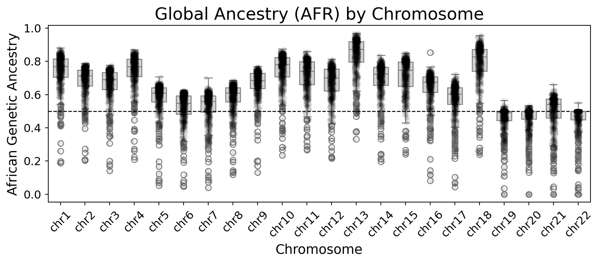

import session_info
import pandas as pd
import seaborn as sns
from pyhere import here
import matplotlib.pyplot as plt
from rfmix_reader import read_rfmixVisualize local ancestry by chromosome
1 Load packages
2 Load data
prefix_path = here("input/real_data/_m/")
binary_dir = here("real_data/gpu_version/_m/binary_files/")
_, rf_q, _ = read_rfmix(prefix_path, binary_dir=binary_dir)GPU 0: NVIDIA A100 80GB PCIe
Total memory: 79.15 GB
CUDA capability: 8.0
Multiple files read in this order: ['chr1', 'chr10', 'chr11', 'chr12', 'chr13', 'chr14', 'chr15', 'chr16', 'chr17', 'chr18', 'chr19', 'chr2', 'chr20', 'chr21', 'chr22', 'chr3', 'chr4', 'chr5', 'chr6', 'chr7', 'chr8', 'chr9']Mapping loci files: 0%| | 0/22 [00:00<?, ?it/s]Mapping loci files: 5%|▍ | 1/22 [00:01<00:33, 1.60s/it]Mapping loci files: 9%|▉ | 2/22 [00:02<00:18, 1.06it/s]Mapping loci files: 14%|█▎ | 3/22 [00:02<00:13, 1.38it/s]Mapping loci files: 18%|█▊ | 4/22 [00:02<00:10, 1.64it/s]Mapping loci files: 23%|██▎ | 5/22 [00:03<00:08, 1.96it/s]Mapping loci files: 27%|██▋ | 6/22 [00:03<00:06, 2.29it/s]Mapping loci files: 32%|███▏ | 7/22 [00:03<00:05, 2.65it/s]Mapping loci files: 36%|███▋ | 8/22 [00:04<00:04, 2.89it/s]Mapping loci files: 41%|████ | 9/22 [00:04<00:04, 3.18it/s]Mapping loci files: 45%|████▌ | 10/22 [00:04<00:03, 3.38it/s]Mapping loci files: 50%|█████ | 11/22 [00:04<00:02, 3.74it/s]Mapping loci files: 55%|█████▍ | 12/22 [00:05<00:04, 2.48it/s]Mapping loci files: 59%|█████▉ | 13/22 [00:05<00:03, 2.83it/s]Mapping loci files: 64%|██████▎ | 14/22 [00:05<00:02, 3.48it/s]Mapping loci files: 68%|██████▊ | 15/22 [00:06<00:01, 4.21it/s]Mapping loci files: 73%|███████▎ | 16/22 [00:06<00:02, 2.86it/s]Mapping loci files: 77%|███████▋ | 17/22 [00:07<00:02, 2.28it/s]Mapping loci files: 82%|████████▏ | 18/22 [00:07<00:01, 2.06it/s]Mapping loci files: 86%|████████▋ | 19/22 [00:08<00:01, 1.95it/s]Mapping loci files: 91%|█████████ | 20/22 [00:09<00:01, 1.94it/s]Mapping loci files: 95%|█████████▌| 21/22 [00:09<00:00, 1.95it/s]Mapping loci files: 100%|██████████| 22/22 [00:09<00:00, 2.10it/s]Mapping loci files: 100%|██████████| 22/22 [00:09<00:00, 2.22it/s]
Mapping Q files: 0%| | 0/22 [00:00<?, ?it/s]Mapping Q files: 100%|██████████| 22/22 [00:00<00:00, 288.61it/s]
Mapping fb files: 0%| | 0/22 [00:00<?, ?it/s]Mapping fb files: 5%|▍ | 1/22 [00:00<00:03, 6.18it/s]Mapping fb files: 9%|▉ | 2/22 [00:00<00:02, 7.83it/s]Mapping fb files: 14%|█▎ | 3/22 [00:00<00:02, 8.63it/s]Mapping fb files: 23%|██▎ | 5/22 [00:00<00:01, 10.14it/s]Mapping fb files: 32%|███▏ | 7/22 [00:00<00:01, 12.11it/s]Mapping fb files: 41%|████ | 9/22 [00:00<00:00, 13.49it/s]Mapping fb files: 50%|█████ | 11/22 [00:01<00:01, 10.42it/s]Mapping fb files: 59%|█████▉ | 13/22 [00:01<00:00, 10.02it/s]Mapping fb files: 73%|███████▎ | 16/22 [00:01<00:00, 11.68it/s]Mapping fb files: 82%|████████▏ | 18/22 [00:01<00:00, 9.91it/s]Mapping fb files: 91%|█████████ | 20/22 [00:01<00:00, 9.36it/s]Mapping fb files: 95%|█████████▌| 21/22 [00:02<00:00, 9.21it/s]Mapping fb files: 100%|██████████| 22/22 [00:02<00:00, 7.35it/s]Mapping fb files: 100%|██████████| 22/22 [00:02<00:00, 9.34it/s]rf_q.shape(11572, 4)rf_q.head()| sample_id | AFR | EUR | chrom | |
|---|---|---|---|---|
| 0 | Br2585 | 0.79160 | 0.20840 | chr1 |
| 1 | Br5113 | 0.74760 | 0.25240 | chr1 |
| 2 | Br2517 | 0.82698 | 0.17302 | chr1 |
| 3 | Br5142 | 0.83839 | 0.16161 | chr1 |
| 4 | Br5073 | 0.69736 | 0.30264 | chr1 |
3 Generate plots
3.1 Sort chromosomes in the correct order
chrom_order = [f'chr{i}' for i in range(1, 23)]rf_q_pandas = rf_q.to_pandas() # Convert cuDF to pandas DataFrame
rf_q_pandas['chrom'] = pd.Categorical(rf_q_pandas['chrom'],
categories=chrom_order, ordered=True)3.2 Sort the dataframe by chromosome
rf_q_sorted = rf_q_pandas.sort_values('chrom')
rf_q_sorted.head()| sample_id | AFR | EUR | chrom | |
|---|---|---|---|---|
| 0 | Br2585 | 0.79160 | 0.20840 | chr1 |
| 359 | Br2287 | 0.80294 | 0.19706 | chr1 |
| 358 | Br5159 | 0.80148 | 0.19852 | chr1 |
| 357 | Br2298 | 0.80109 | 0.19891 | chr1 |
| 356 | Br2070 | 0.80682 | 0.19318 | chr1 |
3.3 Create and save the plot
plt.figure(figsize=(15, 8))
sns.boxplot(x='chrom', y='AFR', data=rf_q_sorted,
color='lightgray', width=0.6)
sns.stripplot(x='chrom', y='AFR', data=rf_q_sorted,
color='black', alpha=0.1, jitter=True)
plt.axhline(y=0.5, color='black', linestyle='--', linewidth=1)
plt.title('Global Ancestry (AFR) by Chromosome', fontsize=18)
plt.xlabel('Chromosome', fontsize=14)
plt.ylabel('African Genetic Ancestry', fontsize=14)
plt.xticks(rotation=45, fontsize=12)
plt.yticks(fontsize=12)
plt.tight_layout()
plt.savefig('global_ancestry_boxplot.pdf', dpi=300, bbox_inches='tight')
4 Session information
session_info.show()Click to view session information
----- cudf 24.06.00 dask 2024.6.2 matplotlib 3.7.1 pandas 2.0.3 pyhere 1.0.0 rfmix_reader 0.1.14 seaborn 0.13.2 session_info 1.0.0 -----
Click to view modules imported as dependencies
PIL 10.3.0 anyio NA argcomplete NA arrow 1.2.3 asttokens NA astunparse 1.6.3 attr 23.2.0 attrs 23.2.0 babel 2.10.3 backcall 0.2.0 cachetools 5.3.3 cairo 1.20.1 certifi 2024.02.02 cffi 1.16.0 chardet 4.0.0 charset_normalizer 3.3.2 cloudpickle 2.1.0 comm 0.2.2 cuda 12.4.0 cupy 13.1.0 cupy_backends NA cupyx NA cycler 0.10.0 cython_runtime NA dask_expr 1.1.6 dateutil 2.8.2 debugpy 1.6.3 decorator 5.1.1 defusedxml 0.7.1 dot_parser NA exceptiongroup 1.2.0 executing 0.10.0 fastjsonschema NA fastrlock 0.8.2 fontTools 4.33.3 fqdn NA fsspec 2022.7.1 gi 3.40.1 gio NA glib NA gobject NA google NA gtk NA idna 2.10 importlib_metadata NA importlib_resources NA iniconfig NA ipykernel 6.15.1 ipywidgets 8.1.2 isoduration NA jedi 0.19.1 jinja2 3.1.1 json5 NA jsonpointer 2.3 jsonschema 4.21.1 jsonschema_specifications NA jupyter_events 0.10.0 jupyter_server 2.13.0 jupyterlab_server 2.25.4 kaleido 0.2.1 kiwisolver 1.4.3 llvmlite 0.42.0 lxml 4.9.1 markupsafe 2.1.1 matplotlib_inline 0.1.6 mpl_toolkits NA nbformat 5.4.0 netifaces 0.10.6 numba 0.59.0 numexpr 2.10.1 numpy 1.26.4 nvtx NA optree 0.11.0 overrides NA packaging 21.3 parso 0.8.3 patsy 0.5.2 pexpect 4.8.0 pickleshare 0.7.5 pkg_resources NA platformdirs 3.8.0 plotly 5.9.0 pluggy 1.5.0 prometheus_client NA prompt_toolkit 3.0.30 psutil 5.9.8 ptyprocess 0.7.0 pure_eval 0.2.2 py 1.11.0 pyarrow 16.1.0 pydev_ipython NA pydevconsole NA pydevd 2.8.0 pydevd_file_utils NA pydevd_plugins NA pydevd_tracing NA pydot 1.4.2 pygments 2.18.0 pynvml 11.4.1 pyparsing 3.0.9 pytest 8.2.1 pythonjsonlogger NA pytz 2022.1 rapids_dask_dependency NA referencing NA requests 2.31.0 rfc3339_validator 0.1.4 rfc3986_validator 0.1.1 rmm 24.06.00 rpds NA scipy 1.13.1 send2trash NA setuptools 70.0.0 six 1.16.0 sniffio 1.2.0 socks 1.7.1 sphinxcontrib NA stack_data 0.4.0 statsmodels 0.14.0 tblib 3.0.0 tenacity NA tlz 0.12.0 toolz 0.12.0 torch 2.3.1+cu121 torchgen NA tornado 6.2 tqdm 4.66.4 traitlets 5.9.0 typing_extensions NA uri_template NA urllib3 1.26.18 wcwidth 0.2.5 webcolors 1.11.1 websocket 1.4.0 yaml 6.0 zipp NA zmq 25.0.0 zoneinfo NA zstandard 0.18.0
----- IPython 8.4.0 jupyter_client 8.0.2 jupyter_core 5.2.0 jupyterlab 4.1.5 notebook 7.1.2 ----- Python 3.9.16 (main, Dec 8 2022, 00:00:00) [GCC 11.3.1 20221121 (Red Hat 11.3.1-4)] Linux-5.14.0-284.11.1.el9_2.x86_64-x86_64-with-glibc2.34 ----- Session information updated at 2024-07-03 13:54